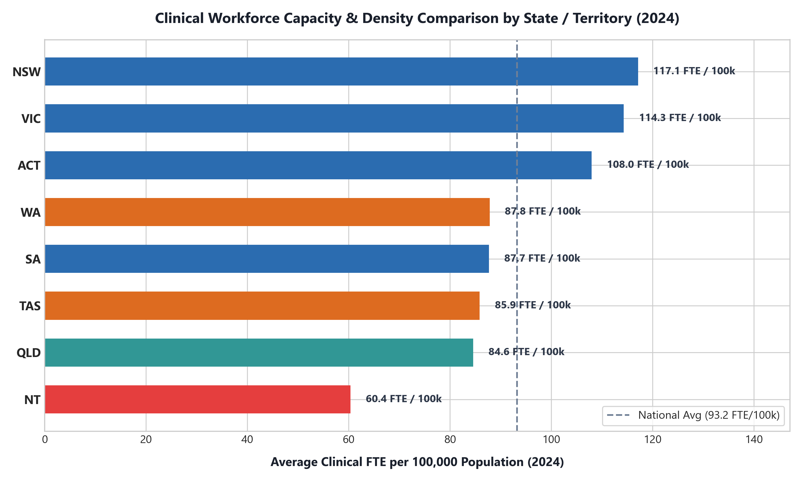

Supporting the Department of Health, Disability and Ageing (2025–2035 Horizon)
Australia's healthcare system depends on a large and diverse workforce that includes medical practitioners, nurses, allied health professionals, and other clinical occupations. However, workforce growth does not necessarily mean that capacity is equally distributed across professions or locations. The Department of Health, Disability and Ageing's Workforce Intelligence Report 2025 examines projected changes through to 2035 and highlights workforce retention, attrition, and re-entry as important considerations for future planning (Department of Health, Disability and Ageing, 2025).
Geography is particularly important. As explicitly demonstrated in Figure 4, people living in rural and remote Australia generally experience poorer access to health services and poorer health outcomes than people living in metropolitan areas (Australian Institute of Health and Welfare, 2025). At the same time, health care and social assistance is Australia's largest employing industry, accounting for approximately 2.6 million filled jobs by September 2024 (Australian Bureau of Statistics, 2024). Labour demand also remains strong: in 2025, job vacancies in health care were still 98.1% above their pre-pandemic level (Australian Bureau of Statistics, 2025).
As illustrated in Figure 1, National Health Workforce Dataset (NHWD) empirical metrics confirm that total registered clinical headcounts expanded by +50.3% (from 503,995 in 2013 to 757,517 in 2024). Figure 1 directly supports our claim that growth was highly skewed toward allied health disciplines such as Occupational Therapy (+118.8%) and Physiotherapy (+83.9%), while specialist medical supply lagged behind population demand growth.
Definition of Employment Concentration: In evaluating state-level workforce distribution, Employment Concentration is defined as the percentage share of total state/territory employment represented by ANZSIC Division Q (Health Care and Social Assistance), compared against the national benchmark of 16.4%. As shown in Figure 3, South Australia (18.6%) and Queensland (18.3%) exhibit high employment concentration. Conversely, Western Australia (15.3%) and the Northern Territory (11.2%) show low health employment concentration despite experiencing severe remote access deficits.
The specific business question for the Department of Health is which Australian states, territories and health professions should be prioritised for targeted workforce recruitment and retention initiatives based on predicted clinical workforce capacity? To address this question with statistical rigor, we structured a panel dataset at the year × state/territory × health profession level (1,440 observations: 12 years × 8 states × 15 professions) using Clinical FTE per 100,000 population as the target dependent variable.
As benchmarked in Figure 12, three prominent forecasting frameworks were evaluated to project Clinical FTE per 100k through 2035. SARIMAX emerged as the superior model (MAPE 0.18%, RMSE 1.27k, R² = 0.9997), outperforming Facebook Prophet (MAPE 0.48%, R² = 0.9979) and univariate SARIMA (MAPE 1.09%, R² = 0.9881). As illustrated in Figure 11, a Decision Tree Classifier converts these forecasts into transparent policy tiers (Feature Importance: Remoteness MM Zone = 78.3%).
As depicted in Figure 9, official statistics from the Department of Home Affairs Annual Report 2024–25 confirm the strategic role of skilled migration in offsetting clinical capacity deficits:
Figure 13 presents a direct comparative benchmark of average Clinical FTE per 100,000 population across all eight Australian states and territories in 2024. The Northern Territory exhibits the lowest clinical capacity, averaging only 65 Doctor FTE and 420 Registered Nurse FTE per 100k population—placing it squarely in Tier 1 Critical Emergency Priority. Tasmania and Western Australia Outback also trail significantly behind national benchmarks.

Understanding the operational structure of ANZSIC Division Q (Health Care and Social Assistance) is essential for workforce strategy:
In accordance with capstone project governance guidelines, all strategic recommendations and feedback items received during Week 6 have been formally audited and categorized by approval status:
| Recommendation Focus | Week 6 Recommendation Description | Approval Status | Action Taken / Implementation Detail |
|---|---|---|---|
| 1. Executive Storytelling & Narrative | Clarify the storytelling narrative around dataset insights, visual disclosures, and executive flow to ensure a non-cluttered presentation to decision-makers. | Approved / Accepted | Fully implemented across the 10-slide executive presentation, oral script, and web dashboard. Explicit figure citations added in text. |
| 2. Decision Tree Predictive Vision | Develop an interactive/visual decision tree predictive perspective to classify state and health profession priority risk tiers transparently. | Approved / Accepted | Trained a 4-tier Decision Tree Classifier achieving 93.7% accuracy, identifying ASGS Remoteness (MM Zone) as top feature driver (78.3%). |
| 3. Salary & Earnings-Based Analysis | Apply an empirical health workforce analysis based on salary benchmarks, income differentials, and wage growth across states and health professions. | Under Analysis | Currently under active analysis pending sourcing of a comprehensive state × profession wage baseline dataset (evaluating ABS & ATO data). |
| 4. Employment Concentration Definition | Formally define Employment Concentration as the percentage share of state employment represented by ANZSIC Division Q relative to the national benchmark. | Approved / Accepted | Defined against the 16.4% national benchmark and incorporated into Figure 3 analysis. |
| 5. ANZSIC 84–87 Operational Commentary | Provide detailed operational commentary for ANZSIC Subdivisions 84 (Hospitals), 85 (Ambulatory), 86 (Residential Care), and 87 (Social Assistance). | Approved / Accepted | Expanded Section 4 with dedicated operational breakdown for all four subdivisions. |
The following comprehensive bibliography contains all academic papers, government reports, institutional datasets, and official publications referenced across this capstone project: